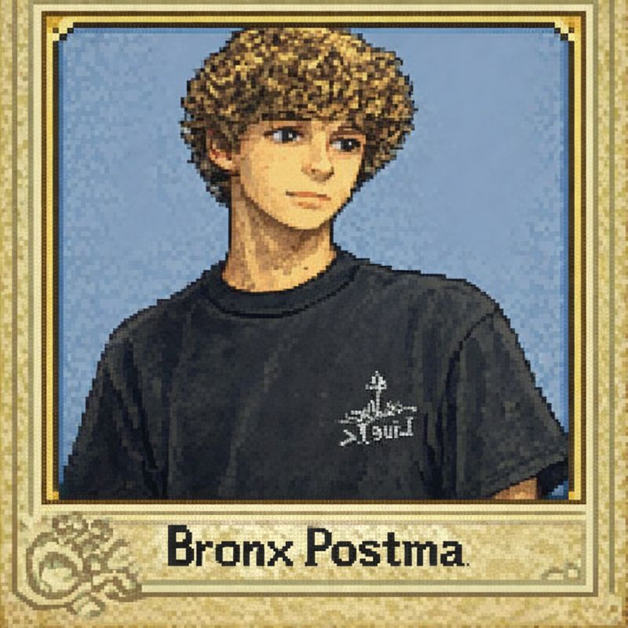

Lvl: 19
Hp: 67/100
lijst 1 & 2 : bij lijst 1 en 2 ben ik van 36 punten naar 40 gegaan
lijst 3 & 4 : bij lijst 3 en 4 ben ik van 36 punten naar 40 gegaan
Conclussie: Bij de lijsten in semester 2 merk ik dat ik in sprint 6 dacht dat ik veel verder was dan is